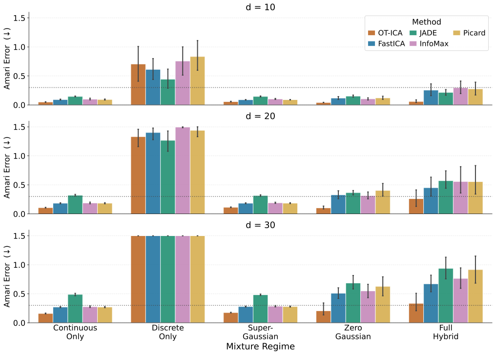
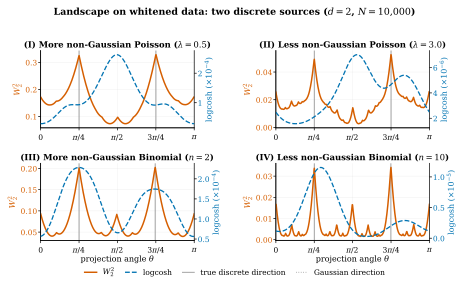
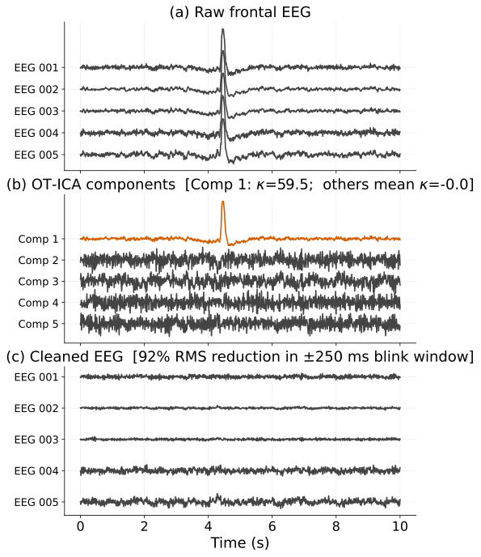

Independent Component Analysis (ICA) or blind source separation is a recurring problem across fields: separating CDMA signals in telecommunications, isolating neural activity from ocular and muscular artifacts in EEG/MEG, identifying information shares across markets in econometric price discovery, and comparable source separation tasks in imaging and sensor arrays. ICA is the classical tool for these tasks.
ICA recovers mutually independent source signals \(\mathbf{Z}\) from a linear mixture \(\mathbf{X} = \mathbf{A}\mathbf{Z}\). If at most one source is Gaussian, \(\mathbf{A}\) is identifiable up to permutation and scaling (Comon, 1994).
By the Central Limit Theorem, a mixture of samples from independent non-Gaussian sources is more Gaussian than the sources themselves. Recovering an independent source therefore means finding the projection that is least Gaussian; maximizing non-Gaussianity is the classical ICA objective. Information theory links non-Gaussianity directly to independence once the data is whitened:
Let \(Y\in\mathbb{R}^d\) be whitened (\(\operatorname{Cov}(Y)=\mathbf{I}\)). The mutual information \(\mathscr{I}(Y)\) satisfies:
where \(G(\cdot)\) is non-Gaussianity (minimal KL divergence to a Gaussian). Two Pythagorean identities give this: a product-manifold identity \(D_{\mathrm{KL}}(P_Y\|Q)=\mathscr{I}(Y)+\sum_i D_{\mathrm{KL}}(P_{Y_i}\|q_i)\) and a Gaussian-manifold identity \(D_{\mathrm{KL}}(P_Y\|\mathcal{N}(\Sigma))=G(Y)+D_{\mathrm{KL}}(\mathcal{N}(\operatorname{Cov}Y)\|\mathcal{N}(\Sigma))\).
Since \(G(Y)\) is rotation-invariant, minimizing dependence is equivalent to maximizing total marginal non-Gaussianity.
After whitening, every candidate unmixing direction lies on the orthogonal group \(\mathrm{O}(d) = \{\mathbf{B}\in\mathbb{R}^{d\times d} : \mathbf{B}\mathbf{B}^\top = \mathbf{I}\}\), the rotations of the whitened data.
Because the marginal density needed for exact non-Gaussianity is unknown, classical algorithms substitute a proxy contrast, each with a specific, documented limitation:
Can hit zero gradient or a singular Hessian on specific non-Gaussian distributions engineered to satisfy the zero-negentropy / vanishing-curvature conditions, stalling the fixed-point solver.
Reliable cumulant-tensor estimation needs \(\mathcal{O}(d^4)\) samples: at \(d{=}30\) that is approximately 810k samples, much more than other ICA methods.
The fixed logistic nonlinearity implicitly assumes sub-Gaussian sources; the score is misspecified on super-Gaussian components (e.g. Laplace, Student-t).
Converges faster per iteration but shares InfoMax's tanh nonlinearity.
We measure non-Gaussianity as the squared Wasserstein-2 distance to a standard Gaussian \(\Gamma\), the minimum-cost coupling between two distributions:
Unlike proxy contrasts, \(W_2^2\) is a true metric, non-zero on every non-Gaussian distribution. Below is OT-ICA's main optimization objective: maximize the contrast over a whitened projection \(\mathbf{b}^\top\widetilde{\mathbf{X}}\) to find the best unmixing direction:
Let \(\mathbf{Z}=(Z_1,\dots,Z_d)\) be centered, unit-variance, independent sources with at most one Gaussian and smooth positive densities. For any unit vector \(\alpha\) with ≥2 nonzero entries:
⇒ the contrast is maximized only at pure independent components. This extends to joint optimization: for \(\mathbf{B}\in \mathrm{O}(d)\), the total contrast \(\sum_i W_2^2(\mathbf{b}_i^\top\mathbf{Z},\Gamma)\) is maximal iff \(\mathbf{B}\) is a signed permutation.


While \(W_2^2\) peaks at the correct locations even in this hard discrete case, the landscape also shows local maxima away from the peak. In future work, we plan to investigate if this is what makes optimization harder in high dimensions, consistent with OT-ICA's weaker performance on high dimensional Discrete Only mixtures in the Results above, even though \(W_2^2\) retains a clear contrast signal, unlike the logcosh proxy behind FastICA, which fails to separate sources even in this simple two-source case. If so, the discrete-case bottleneck is the optimization landscape (local maxima and basin collapse), not the contrast itself.
OT-ICA on five frontal EEG channels (MNE sample dataset). Blink artifacts are impulsive and super-Gaussian, letting artifact removal proceed without a density model:
